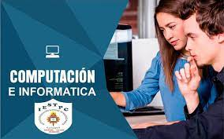

|
INFORMACION
La Computación es la disciplina que se encarga del estudio de las computadoras, abarcando su diseño,
desarrollo y procesamiento (hardware), mientas que la Informática recoge y ordena los datos convirtiéndolos en
información sencilla (software).Estudiando nuestra carrera podrás culminar tus estudios en menor tiempo y acceder a la
convalidación que te permitirá obtener un título universitario en UPC, UPN, ESAN y La Salle.
¿QUÉ ES LO QUE HACE UN TÉCNICO EN COMPUTACIÓN E INFORMÁTICA?
Un experto en la carrera de Computación e Informática se enfocará en la tecnología como herramienta aplicada
al mercado laboral. Podrá desarrollar soluciones utilizando metodologías tecnológicas.
Estudiando nuestra carrera técnica, podrás acceder a diversos beneficios como los convenios con Microsoft, IBM y Oracle.
CAMPO LABORAL
El egresado en Computación e Informática podrá desempeñarse en empresas públicas y privadas, ejerciendo su carrera como:
Programador
Desarrollador multiplataforma
Analista Funcional
Analista Programador
Programador de base de datos
Modelador de base de datos
¿QUÉ SE ESTUDIA EN COMPUTACIÓN E INFORMÁTICA?
Nuestra malla curricular en Computación e Informática destaca por ofrecerte una formación holística en habilidades blandas y en
conocimiento técnico avanzado. Dentro de la carrera aprenderás a desarrollar soluciones multiplataformas aplicando criterios de
calidad y seguridad informática a un nivel avanzado.
Email maliirequejo@gmail.com

|
Además de contar con la modalidad de clases precenciales en nuestra provincia de Cutervo en el INSTITUTO DE ESDUCACION SUPERIOR TECNOLOGICO PUBLICO CUTERVO,
tambien podrás estudiar de forma semi presencial en nuestras sedes de Independencia, Breña, Bellavista, San Juan, Lima Centro, Trujillo y Arequipa.
CERTIFICACIONESComo profesional de la carrera Computación e Informática podrás obtener los siguientes certificados:
• Fundamentos de Programación y TI
• Desarrollo de Software y Gestión de Datos
• Gestión de Aplicaciones Multiplataforma

|